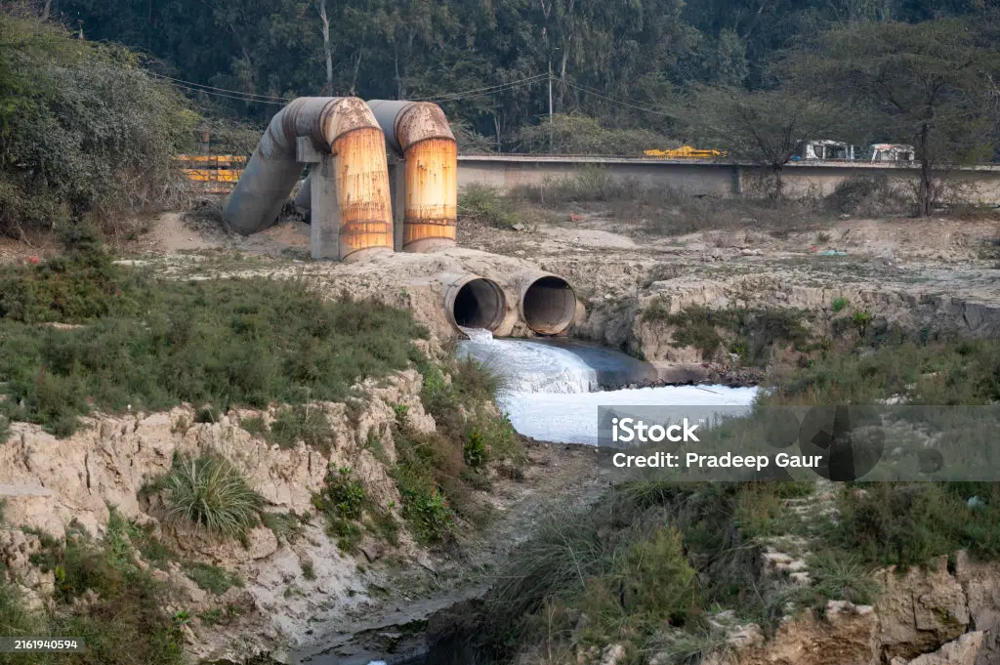
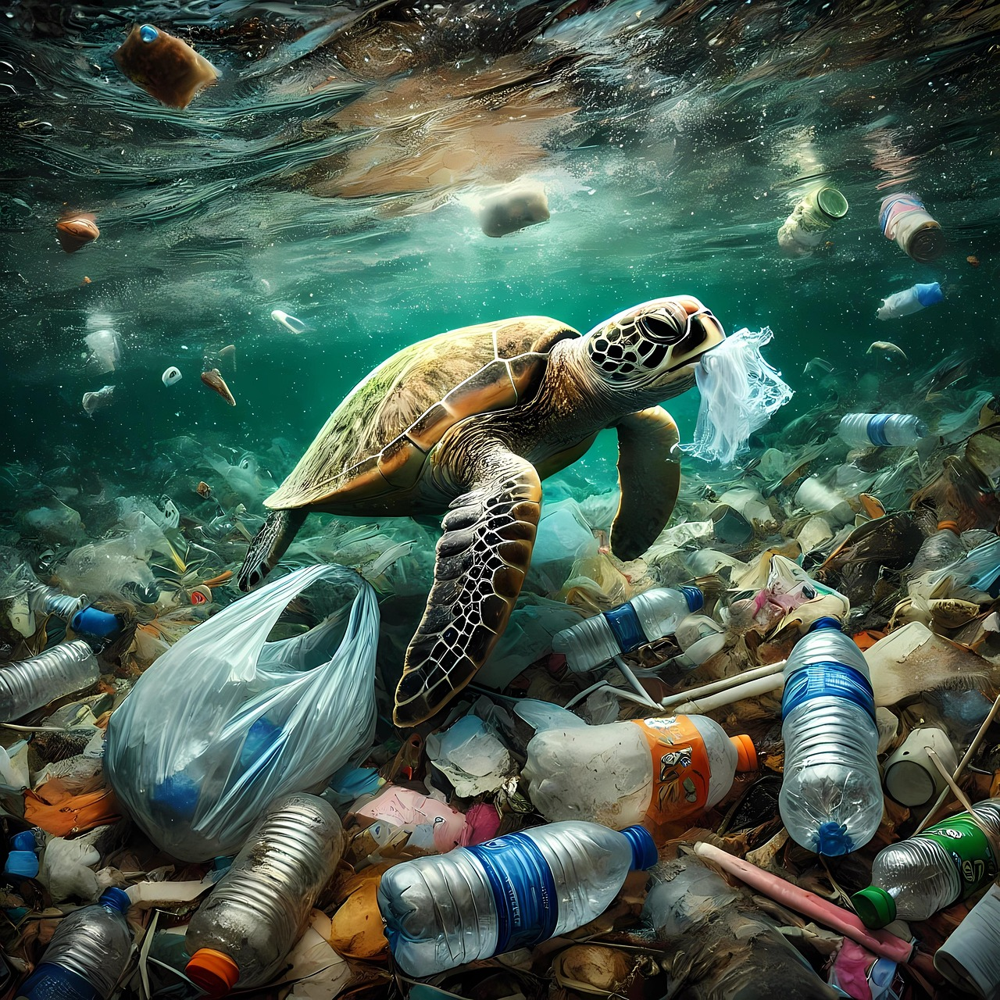

What’s Polluting Our Oceans?
Industrial Waste
Factories and shipping operations along the coast release chemicals and heavy metals into the ocean. These pollutants can poison marine life and degrade water quality, often going unnoticed until serious damage has already occurred.
Agricultural Runoff

Rainwater carries fertilizers, pesticides, and animal waste from farms into nearby rivers and oceans. This runoff contributes to algal blooms that rob marine ecosystems of oxygen, threatening both fish populations and coral health.
Plastic and Microplastics
From plastic bags and bottles to invisible microplastics, our oceans are drowning in synthetic debris. Marine animals frequently mistake plastic for food, leading to internal injuries, starvation, and death. Microplastics also enter the food chain—impacting both wildlife and humans.